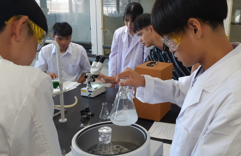

理数科通信 Vol.4 発行！
2024年10月17日 16時15分理数科通信 Vol.4 を発行しました！
２学期初となる理数科通信。今号も，生徒が知的好奇心旺盛に学ぶ様子をお伝えしています。ぜひお読みください！

| 特色ある教育活動 |
理数科通信 Vol.4 を発行しました！
２学期初となる理数科通信。今号も，生徒が知的好奇心旺盛に学ぶ様子をお伝えしています。ぜひお読みください！
10月１日（火），鳥取市立西郷小学校３・４年生を対象に「科学の広場」を実施しました。
今回の授業テーマは「電池の仕組みとカーレース」。まず，電池の構造や仕組みについて児童と一緒に勉強し，その後，電池そして模型自動車の工作を行いました。仕上げはもちろん，電池と模型自動車を組み合わせたカーレース。そんなプランで臨んだ本年度２回目の「科学の広場」の模様についてお伝えします。
「理科の面白さを，もっと多くの人に，もっと広く知っていただきたい」「自然界の不思議や素晴らしさをより多くの人と共有し，自然科学への興味関心を高めたい」鳥取東高校理科スタッフのそんな熱い思いから，10年ぶりに「科学の広場」が復活しました！
本校理科教員が近隣の小学校・中学校に出向き，児童・生徒と一緒に実験する出前授業をとおして理科の面白さや奥の深さを追求する，本校独自企画「科学の広場」。たくさんの小学校，中学校から申込みをいただきました。ありがとうございます。
その第１弾を，９月17日（火），鳥取市立米里小学校で開催しました。その様子をお伝えします。
自然科学は科学者の飽くなき探究心によって発達し，支えられてきた…。
このことを実験・観察や専門講義等をとおして学ぶとともに，高校での理科学習の動機づけを図ることを目的に，鳥取東高校では１年生希望者を対象として「自然科学実験セミナー」を実施しています。
「生徒の10年後，20年後を見すえた教育活動にしたい」「生徒に一流や本物に触れさせたい」との思いから，このセミナーでは，最先端の実験施設を見学・利用でき，そして東高生が大学の教官等と直接対話できるよう，広島大学に協力していただき，連携して本セミナーを開催しています。
令和６年９月11日（水）～13日（金）の３日間，広島大学理学部，生物生産学部， 先端物質科学研究科等の協力を得，本年度の「自然科学実験セミナー」を実施しました。
参加したのは１年生希望者30名。参加者全員が進路意識の高揚そして科学的な問題解決能力の向上に大きな刺激を受けました！

理数科通信 Vol.3を発行しました！
夏の間行われた諸行事を中心にまとめました。今回も盛りだくさんの内容になっています！ぜひご覧ください！
夏真っ盛りの８月19日（月）～20日（火）。島根県松江市で「第26回中国・四国・九州地区理数科高等学校課題研究発表大会」（島根大会）が開催されました。
対象となるのは，理数科を設置する高校に在籍し，課題研究等をとおしてより高次元の学びと研究に取り組んできた生徒。会場となった島根県民会館には，予備審査（予選）を通過した，中国地区（広島県を除く），四国地区そして九州地区を代表する精鋭が集いました。
このうち，制限時間内にプレゼンテーションを行い，続く専門家等との質疑応答で構成される「ステージ発表の部」において鳥取東高校理数科が最優秀賞を受賞しました！
2024年度日本物理教育学会中国四国支部大会支部学術講演会のジュニアセッションに参加しました。
本校は鳥取県教育委員会から「理数教育重点校」の指定を受け，理数科を中心として「科学する心」を育み,将来の科学や技術を担う人材の育成に取り組んでいます。
机に向かうだけでは分からないことがたくさんある。探究心は行動から生まれることだってある。本校はそう考え，理数教育においては体験型の研修や活動も重視しています。
この一環として７月22日（月），東京大学准教授 池内 与志穂先生を講師としてお招きし，鳥取東高校と東京大学のコラボ企画「サイエンスゼミ」を開催しました！今回の学問フィールドは生物学。世界で最先端を行く研究の一端に触れ，人体の不思議や素晴らしいメカニズム，そして科学的なものの見方や考え方にどっぷり浸かる，贅沢で素敵な時間を過ごしました。

昨日（７月８日），本年度の「サイエンスゼミ」を開講しました。
昨年度同様，理数科２・３年生に加え，普通科３年生看護志望生徒（希望者）もこのゼミに参加。高大連携事業として開催されるこの企画。地元の鳥取大学，公立鳥取環境大学及び鳥取看護大学の先生方をゼミ講師として招聘し、生徒はそれぞれの興味関心に応じた分野グループに分かれて，２時間目～４時間目にゼミ形式の講義を受けました。
理数科通信 Vol.2を発行しました！
いよいよ今年度も理数科の特色ある活動が本格始動！通信Vol.2では，諸活動の中から学年別の取組等，たくさんの記事を掲載しました。ぜひ，お楽しみください！